星心会
相談する星心会
相談する
星心会
相談する星心会
相談する
星心会SEISHINKAI · YOKKAICHI
環境調整という、メンタルヘルスケア
名古屋から30分
名古屋西ICから車で約30分／三岐線 山城駅から徒歩5分／四日市駅から三岐バス「団地下」
診断も、病院に行ったことも、手続きの知識も要りません。書類と手続きはこちらで進めます。
眠れない、気分の波がある、仕事が続かない、親元を出たい。ご自身のことで困っている大人の方へ。
家族が家から出ない、日中の行き場がない。ご家族の方へ。本人が動けなくても、ご家族からの相談で始められます。
落ち着かない、かんしゃくが多い、集団が苦手なお子さまの保護者の方へ。
企業内でのメンタルヘルスに関わるお手伝いをします。
X
世界のメンタルヘルス・ニュース
@gcbfhq
マレーシアの公的相談電話「Talian HEAL 15555」(毎日8時〜24時)を、保健省が段階的に24時間化する方針。待ち時間を減らす折り返し電話も検討中。相談で一番多い悩みは「仕事のストレス」だという。開設から4年。 #メンタルヘルス #マレーシア
カザフスタンでは、国の名簿に登録しないと「心理士」を名乗れなくなりました。9月施行の新法で、「サイコ〜」と紛らわしい肩書きも禁止。自称ヒーラーの締め出しが狙いです。登録の猶予は1年、10月13日には職業基準も発効。 #カザフスタン #メンタルヘルス
1〜6のうち「4」だけ抜けた番号。中国の全国統一こころの相談電話「12356」は、「没四(4がない)」と「没事(大丈夫)」をかけて「大丈夫ダイヤル」と呼ばれる。広東省では330人が24時間交代で、月4.5万件超の電話を受ける。 #メンタルヘルス #中国
CONTACT
どの事業か決まっていなくてもかまいません。
059-315-0697